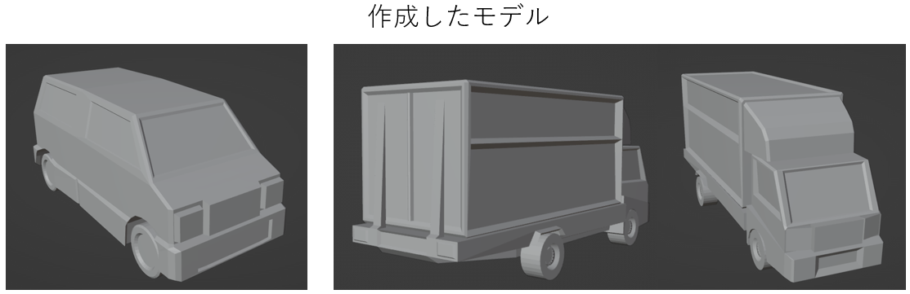
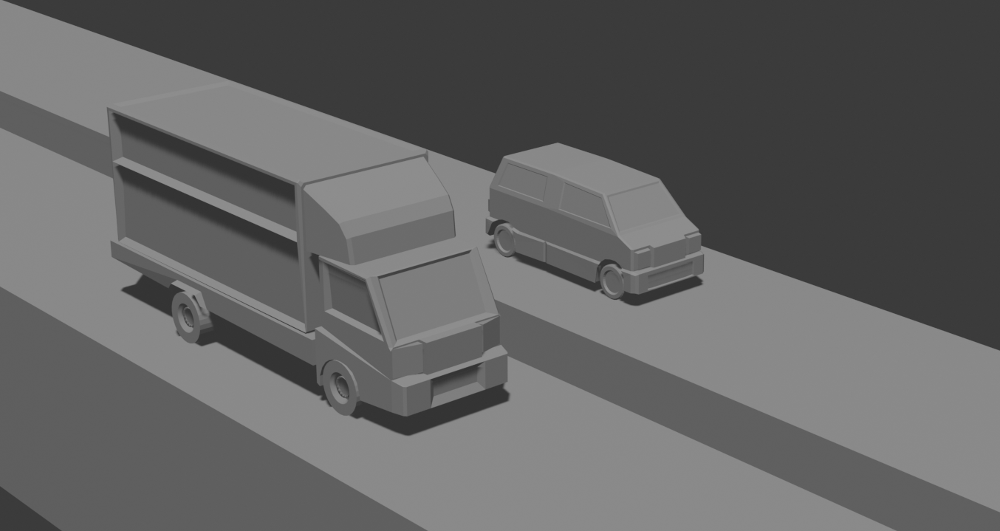
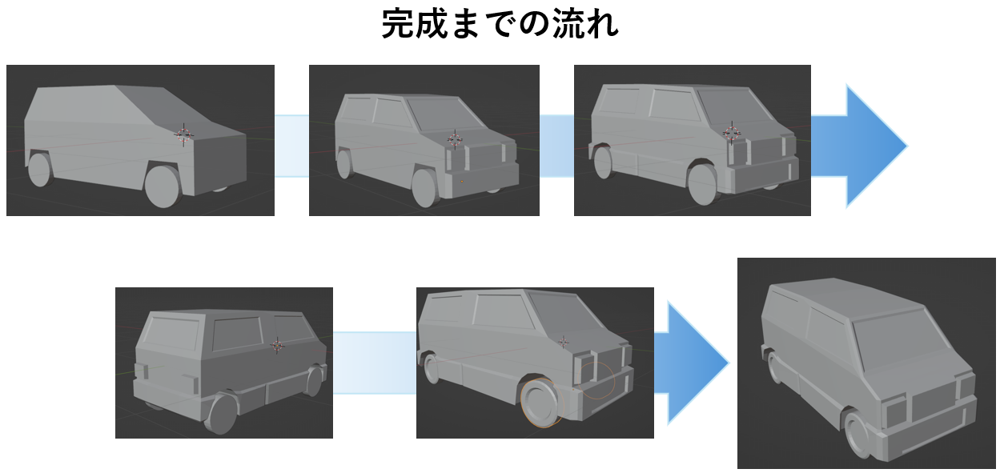

Switch Signal!!
制約を活かしたモデリングと連携で、実働3日で完成させたパズルゲーム

プロジェクト概要
ゲーム内容
1週間のゲーム制作イベント「Unity 1Week（お題：かわる）」にて制作した2Dパズルゲームです。
固定カメラでステージ全体を見渡し、各方面から流れてくる車の動きを見ながら信号のスイッチを切り替え、自機をゴールまで導きます。
「ある信号を止めると別の信号が進む」といった法則性を解明するパズル要素に加え、あえてガチャガチャと操作して偶然クリアしたり、失敗して車に轢かれる様子（わちゃわちゃ感）を楽しむなど、プレイヤーによって遊び方が変わる自由度の高さも特徴です。
チーム概要
本プロジェクトは、企画者兼プログラマを中心に、素材班3人の全4人チームで進行しました。プログラマがディレクターも兼任しているため、主導者を中心としたトップダウンに近い迅速な開発体制となっています。
作品アクセス
本作品はゲーム投稿サイト「UnityRoom」にて実際にブラウザ上でプレイ可能です。
3DCG制作における技術的な工夫（制約の活用）
実働3日という極端に短いスケジュールの中で品質を担保するため、「テクスチャやアニメーションを排し、単色モデルの表現で語る」というプログラマの設計方針に基づき、以下の工夫を行いました。
陰影で情報量を増やすモデリング設計

白の単色（テクスチャ無し）という表現制約があったため、「単色かつ遠景でもディテールが伝わること」を意識し、ローポリゴンであってもチープな印象を与えないようオブジェクトを作成しました。
具体的には、Unity上でライティングを行った際に「影」によって物体の情報量が増えるよう、一つの平面に対して様々なレベル（高さ）が重なり合う構造にしています。正面バンパーの段差や側面への回り込みなどを細かく作成し、陰影の複雑さとシルエットによって説得力のある表現ができるよう心掛けました。
【オブジェクト確認用に撮影した遠景画像】

プログラマの組み込みコストを最小化する納品
プログラマ1名・素材班3名という体制だったため、アセットの統合でプログラマの工数を圧迫しないことが最優先でした。
テクスチャ無しの単色という仕様自体が工数削減（アジャイルな組み込み）に寄与していましたが、さらに私は依頼されたプロップのモデリングだけでなく、ステージ全体を構築した状態で納品を行っています。
その際、「横断歩道のラインが低すぎるとZファイティング（表示のちらつき）で地面に飲み込まれ、高すぎるとキャラクターの物理判定に引っかかるのでは」といった実装上の課題を事前に発見して相談するなど、実装側の負担軽減と不具合の回避に努めました。
超短期開発における連携の工夫
作業工程のリアルタイム共有による「デザインラインの牽引」
企画決定から実働まで残り3日という状況だったため、言葉で完成形をすり合わせる時間を省略しました。
私はモデリングの初期段階（ラフモデル）から作業状況を全体チャットに公開し、徐々にディテールを加えて完成形へ近づいていく過程をリアルタイムで見せ続けました。
これにより、企画者と正解のデザインを細かくすり合わせられただけでなく、他の3D担当メンバーに対しても「このゲームのトーン＆マナー（作風）」を視覚的に提示し、チーム全体のアセットの統一感と作業スピードを牽引しました。

制作の所感
非常にタイトなスケジュールでしたが、機能と表現の取捨選択（スコープの絞り込み）が明確だったため、迷いなく制作に集中できました。
また、Unity 1Weekに出場したことで、インターネット上の見知らぬユーザーからプレイ評価やフィードバックを直接いただくことができ、大きな達成感を得た、個人的にも非常に思い入れの深い作品です。